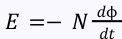
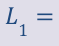
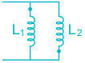
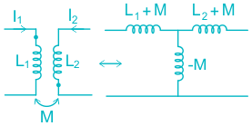
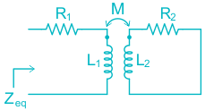
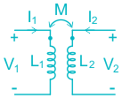
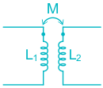

08 Magnetic Coupled Circuits
Magnetic coupled circuits
Fleming’s Right hand rule:
It is applicable for generators.
Movements of conductors, magnetic field and current are perpendicular to
each other. If the thumb, fore-finger and middle of right hand are stretched perpendicular
to each other then, ⋆ Fore finger represents direction of magnetic field. ⋆ Middle finger represents the direction of current. ⋆ Thumb represents the direction of force.
Fleming’s left hand rule:
It is applicable for electric motors Whenever a current carrying conductor is placed in a magnetic field, the
conductor experiences force which is perpendicular to both magnetic field and direction of the current.
⋆ Fore finger represents the direction of magnetic field. ⋆ Middle finger represents the direction of current ⋆ Thumb represents the direction of force.
Faraday’s Laws
Faraday’s First Law.
Whenever a conductor is placed in a varying magnetic field, EMF is induced,
which is called induced EMF. If the conductor circuit is closed, the current will also circulate through the
circuit and this current is called induced current.
Faraday’s Second Law:
The magnitude of EMF induced in the coil is equal to the rate of change of
flux that linkages with the coil. The flux linkage of the coil is the product of the number of turns in the coil
and flux associated with the coil.
𝐸=−𝑁 𝑑ϕ 𝑑𝑡 Here negative sign will be explained by Lenz’s law.
Lenz’s Law:
The direction of the induced current in the coil will be always in such a way as to oppose the change which produces current. It is just a small addition to faraday’s law
Mutual Inductance:
Mutual Inductance between two coils defined as rate of change of flux linkages in a coil w.r.t time varying nature of current through another coil which is magnetically couple to first coil.
𝐸 𝑚 =−𝑀 𝑑𝑖 𝑑𝑡
Where, M is the mutual inductance. E m is the induced EMF i is the current
Magnetic Couplings:
Type of magnetic coupling.
- 1. Positive magnetic coupling (M is positive)
- 2. Negative magnetic coupling (M is negative) The two coils are said to be positively coupled, if the flux produced by the coils adding on another in the magnetic circuit. The two coils are said to be negatively coupled, if flux produced by two coils oppose one another in the magnetic circuit.
Dot notation:
Dot notation is useful to know the type of magnetic coupling between the two
coils. Dot marks should be assumed either at beginning or at termination end of
each coil based on sense of coil. If the current enters or leaves the dots at both the coils, it can be accessed
that the fluxes produced by two coils aid one another in the magnetic circuit and the type of coupling between them is positive. It the current enters the dot at one coil and leaves dot at another coil loss if
the current leaves the dot at one coil and enters dot at another coil it can be accessed that the fluxes produced by two coils definitely oppose one another in the magnetic circuit and the type of coupling between them is negative.
Basic Formulae

𝑁 1 ϕ 1 𝑁 2 ϕ 2 𝐿 1 = 𝐿 2 = 𝐼 1 𝐼 2 𝑁 2 ϕ 12 𝑁 1 ϕ 21 𝑀= = 𝐼 1 𝐼 2 𝑁 2 ϕ 12 𝑁 1 ϕ 21 --(1) 𝑀= 𝐼 1 ϕ 1 ϕ 1 = 𝐼 2 ϕ 2 ϕ 2 ϕ 12 ϕ 21 ϕ 2 = 𝑢𝑠𝑒𝑓𝑢𝑙 𝑓𝑙𝑢𝑥 𝐾= ϕ 1 = 𝑇𝑜𝑡𝑎𝑙 𝑓𝑙𝑢𝑥 from (1) M 2 = KL 1 L 2 𝑀= 𝐾 𝐿 1 𝐿 2 K = 0 represents Loose Bound K = 1 represents Tight Bound.
L eq = L 1 + L 2
𝐿 1 𝐿 2 𝐿 𝑒𝑞 = 𝐿 1 +𝐿 2

L eq = L 1 + L 2 + 2M

L eq = L 1 + L 2 2M

2 𝐿 1 𝐿 2 −𝑀 𝐿 𝑒𝑞 = 𝐿 1 +𝐿 2 −2𝑀

2 𝐿 1 𝐿 2 −𝑀 𝐿 𝑒𝑞 = 𝐿 1 +𝐿 2 +2𝑀


2 𝐿 1 𝐿 2 −𝑀 Irrespective of dots 𝐿 𝑒𝑞 = 𝐿 2

2 ω 2 𝑍 𝑒𝑞 = 𝑍 11 + 𝑀 where Z 11 = R 1 + jωL 1 and Z 2 = R 2 + jωL 2 𝑍 22

𝑑𝐼 1 𝑑𝐼 2 𝑉 1 −𝐿 1 𝑑𝑡 −𝑀 𝑑𝑡 = 0 𝑑𝐼 2 𝑑𝐼 1 𝑉 2 −𝐿 2 𝑑𝑡 −𝑀 𝑑𝑡 = 0
Z parameter

[] 𝑍= 𝑗ω𝐿 1 𝑗ω𝑀 𝑗ω𝑀 𝑗ω𝐿 2
Imp Points 2 + 1 2 ±𝑀𝐼 1 𝐼 2 1 Energy stored in combination of inductors is 2 𝐿 1 𝐼 1 2 𝐿 2 𝐼 2
For ideal transformer: the transmission matrix is given by
𝑁 1 𝑁 2 ⎡⎢⎣ ⎤⎥⎦ where N 1 and N 2 are the number of turns on primary and
𝐴 𝐵 𝐶 𝐷 [] = 𝑁 2 0 0 𝑁 1 secondary side respectively.